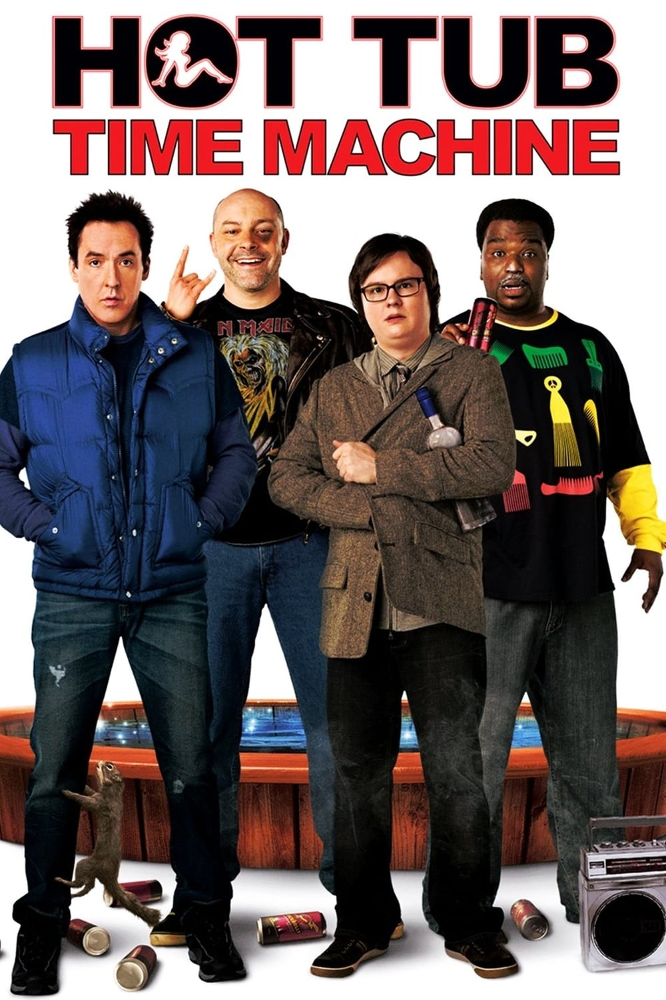
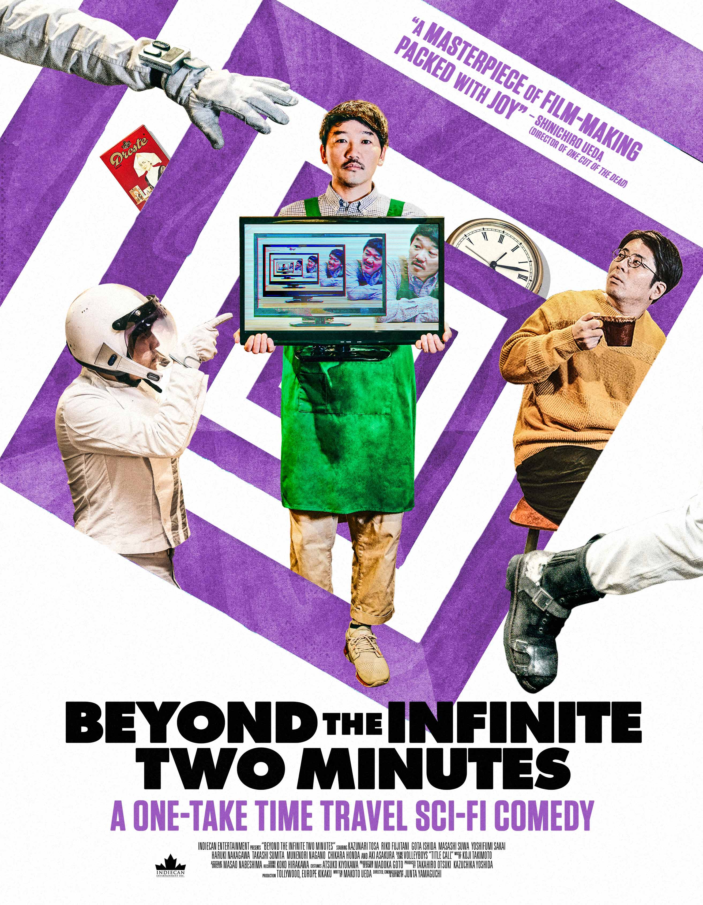
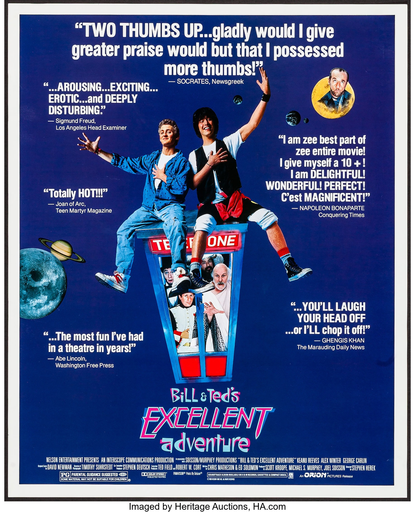
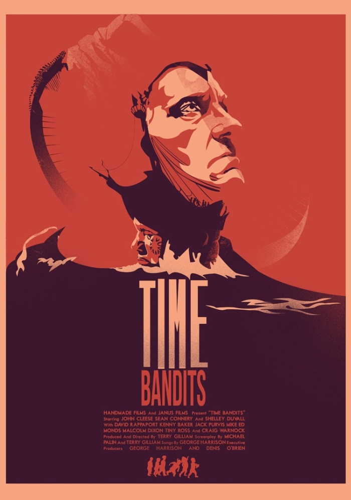

The through line on this little side project is Time-Travel. Be it intentional, accidental, or lopped. If the main characters movie through time in a non-traditional way, they ended up on this list. It is by no means an exhaustive list (there are only 14 titles here) but hopefully it is a fun list. You can use the genre buttons below to jump to a section, and the titles above the posters all lead to the IMDB pages of the respective flicks.
To be clear, I've only watched about half of these. Some are recommendations from people, some are recommendations from the internet. Also if you have more suggestions, let me know!! This is just fun practice for me to work on my HTML and CSS skills.
I feel like it is important to mention that while I might dive into movies sometimes to pick them apart, it's all in good fun. I really just love movies, and when they don't make 100% sense or there is a fun alternate reading of it, all the better.
Also, I would like to mention a thing I didn't notice until my partner pointed it out; it's not Groundhog's Day, it's just Groundhog Day. Anyway, without further adieu ...
The List
Science-Fiction Comedy
Hot Tub Time Machine
Beyond the Infinite Two Minutes
Bill and Ted's Excellent Adventure
Time Bandits
Science-Fiction Romance
The movies in the Time-Travel Romance genre are almost all pretty poorly reviewed. For good reason. Look, I enjoy a good romance, but good is something these movies are not. So the two in here are one that I don't like but is too well known to leave off the list, and the other is quite possibly the only well reviewed movie of it's class.